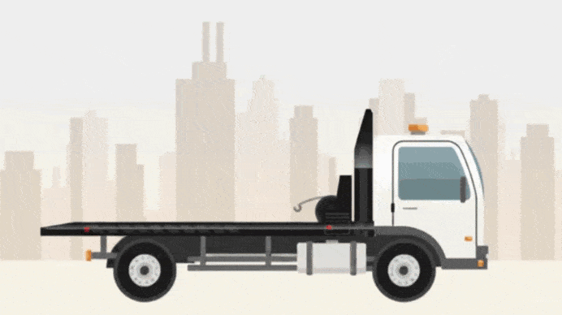

Carlos Gomez
Mercedes Benz Accelo STP-1234
Ver detalles del seguimiento

Su servicio ha sido ingresado
estamos buscando el móvil para su servicio...
Iniciando
Conectando con unidad
Mercedes Benz Accelo STP-1234